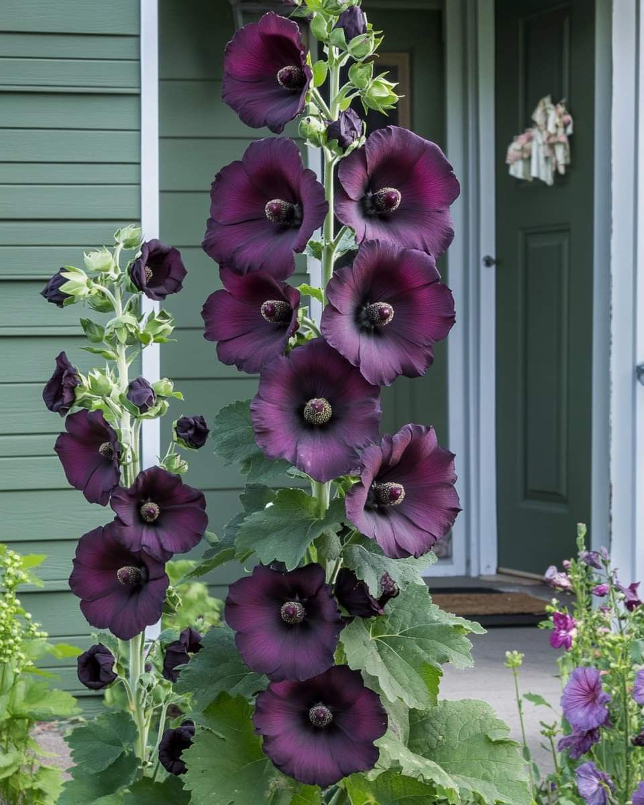
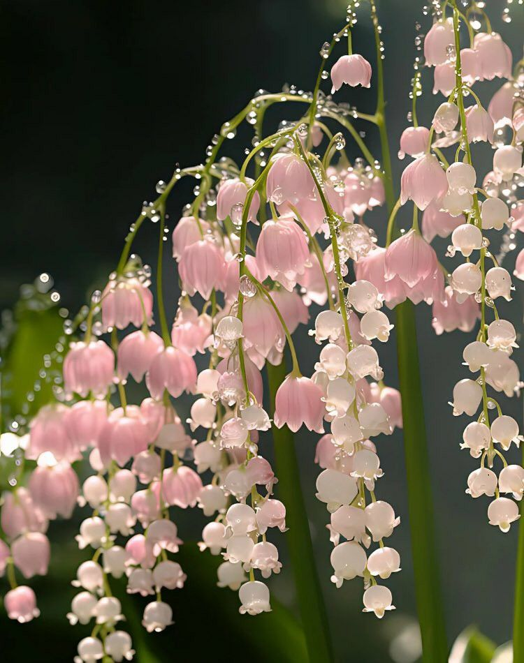
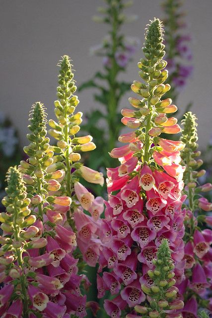

Bloemen!
Bloemen zijn de voortplantingsorganen van veel planten. Ze zorgen ervoor dat planten zich kunnen voortplanten door zaden te vormen. Bij dit proces speelt bestuiving een belangrijke rol: insecten zoals bijen en vlinders, maar ook de wind of water, brengen stuifmeel van de ene bloem naar de andere. Een bloem bestaat uit verschillende delen, zoals de bloemblaadjes, de meeldraden die stuifmeel maken, en de stamper waar uiteindelijk zaden kunnen ontstaan. De kleuren en geuren van bloemen trekken bestuivers aan. Bekende voorbeelden van bloemen zijn tulpen, rozen, zonnebloemen en madeliefjes. 🌸🌼🌻


